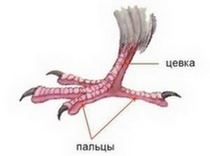

Главная
Внешний видТело птиц четко разделено на голову, шею, туловище, конечности и хвост последний развит слабо, скрыт под оперением и представляет собой небольшой конический выступ, который можно увидеть только после ощипывания перьев надхвостья. Кожа птиц тонкая, сухая, практически лишена желез. Единственная железа — копчиковая — лежит на хвостовых позвонках. Оперение птиц — производное (также роговое) эпидермального слоя кожи. Перьевой покров, придавая телу птиц обтекаемую форму, помогает полету, сохраняет тепло, защищает от механических повреждений. Периодически (один или два раза в год) перьевой покров птиц обновляется путем линьки: старые перья выпадают и на их месте развиваются новые, иногда другой окраски. Линька часто протекает медленно, и птицы могут летать, но у водоплавающих она идет быстро, и птицы временно не могут летать. |
|
|
Перьевой покров |
Крылья и обтекаемая форма тела |
|
 Расположение пальцев на нижних конечностях |
Клюв |